<title>spatial-sync 界面走查</title>
<meta name="claude:viewport-fit-sides" content="cover">
<link rel="preconnect" href="https://fonts.googleapis.com">
<link rel="stylesheet" href="https://fonts.googleapis.com/css2?family=IBM+Plex+Mono:wght@400;500&family=IBM+Plex+Sans:wght@400;500;600&family=Noto+Serif+SC:wght@400;500&display=swap">
<style>
/* Layout: one reading column; each finding is a before/after pair over a numbered note list, the same numbers as the red/green marks in the shots.
   Palette follows the lab platform itself: dark stone first, and the light theme uses the values this review proposes. */
:root{
  color-scheme:dark;
  --ground:#121211;--ground-2:#0d0d0c;--surface:#181816;--surface-2:#201f1d;--line:#292825;--line-2:#383632;--ghost:#4f4d47;
  --ink:#efede7;--ink-2:#d3d0c8;--muted:#a3a097;--faint:#827f76;
  --accent:#9ca4ff;--accent-ink:#bcc1ff;--ok:#88c49c;--warn:#e2b25d;--bad:#f2766a;
  --mark-bad:#d1453b;--mark-ok:#1f8a5b;
  --shadow:inset 0 1px 0 rgb(255 255 255 / 3.5%),0 16px 36px -20px rgb(0 0 0 / 65%);
  --serif:"Noto Serif SC","Songti SC",STSong,"Source Han Serif SC",Georgia,serif;
  --sans:"IBM Plex Sans","PingFang SC","Microsoft YaHei","Noto Sans CJK SC",system-ui,sans-serif;
  --mono:"IBM Plex Mono",ui-monospace,"SF Mono",Menlo,Consolas,"PingFang SC","Microsoft YaHei",monospace;
}
@media (prefers-color-scheme: light){:root:not([data-theme="dark"]){
  color-scheme:light;
  --ground:#f3f2ee;--ground-2:#eae8e2;--surface:#fdfdfb;--surface-2:#f1efea;--line:#e2dfd7;--line-2:#cdc9bf;--ghost:#aca89e;
  --ink:#181713;--ink-2:#33312c;--muted:#5d5a53;--faint:#6d6a62;
  --accent:#4c50c4;--accent-ink:#3b3fa6;--ok:#2f7b4f;--warn:#94620b;--bad:#c63d2f;
  --shadow:inset 0 1px 0 #fff,0 0 0 .5px rgb(48 38 18 / 3%),0 1px 2px rgb(48 38 18 / 7%),0 20px 40px -26px rgb(48 38 18 / 36%);
}}
:root[data-theme="light"]{
  color-scheme:light;
  --ground:#f3f2ee;--ground-2:#eae8e2;--surface:#fdfdfb;--surface-2:#f1efea;--line:#e2dfd7;--line-2:#cdc9bf;--ghost:#aca89e;
  --ink:#181713;--ink-2:#33312c;--muted:#5d5a53;--faint:#6d6a62;
  --accent:#4c50c4;--accent-ink:#3b3fa6;--ok:#2f7b4f;--warn:#94620b;--bad:#c63d2f;
  --shadow:inset 0 1px 0 #fff,0 0 0 .5px rgb(48 38 18 / 3%),0 1px 2px rgb(48 38 18 / 7%),0 20px 40px -26px rgb(48 38 18 / 36%);
}
*,*::before,*::after{box-sizing:border-box}
body{background:var(--ground);color:var(--ink);font:400 15px/1.65 var(--sans);-webkit-font-smoothing:antialiased;padding-left:max(16px,env(safe-area-inset-left,0px));padding-right:max(16px,env(safe-area-inset-right,0px));padding-block:40px 96px}
h1,h2,h3,p,ol,ul,figure{margin:0}
ol,ul{padding:0;list-style:none}
code,.mono{font-family:var(--mono);font-size:.86em;font-variant-numeric:tabular-nums}
code{color:var(--ink-2);overflow-wrap:anywhere}
a{color:var(--ink);text-decoration:underline;text-decoration-color:var(--ghost);text-underline-offset:4px}
a:hover{text-decoration-color:var(--ink)}
:focus-visible{outline:2px solid var(--accent);outline-offset:2px;border-radius:6px}
.wrap{max-width:1240px;margin:0 auto;display:grid;gap:72px}
.eb{font:500 11px/1.4 var(--mono);letter-spacing:.08em;text-transform:uppercase;color:var(--faint)}
.mt{color:var(--muted)}

/* masthead */
.mast{display:grid;gap:28px}
.mast h1{font:400 clamp(32px,4.4vw,46px)/1.15 var(--serif);letter-spacing:-.01em;text-wrap:balance}
.mast .lede{max-width:68ch;color:var(--muted);font-size:16px}
.toc{display:flex;flex-wrap:wrap;gap:6px 22px;padding-top:16px;border-top:1px solid var(--line);font-size:13.5px}
.toc a{color:var(--muted);text-decoration:none}
.toc a:hover{color:var(--ink)}
.toc a span{font:400 11px var(--mono);color:var(--faint);margin-right:6px}
.sum{display:grid;grid-template-columns:repeat(3,minmax(0,1fr));gap:0;border:1px solid var(--line);border-radius:12px;background:var(--surface);box-shadow:var(--shadow);overflow:hidden}
.sum li{display:grid;gap:8px;align-content:start;padding:20px 22px 22px;border-left:1px solid var(--line);min-width:0}
.sum li:first-child{border-left:0}
.sum b{font:500 17px/1.4 var(--serif);text-wrap:balance}
.sum p{font-size:13.5px;color:var(--muted)}
.where{display:grid;grid-template-columns:minmax(0,1fr) minmax(0,1fr);gap:24px}
.where>div{display:grid;gap:8px;align-content:start;min-width:0}
.where ul{display:grid;gap:6px;font-size:13.5px;color:var(--ink-2)}
.where li{display:grid;grid-template-columns:14px minmax(0,1fr);gap:8px}
.where li::before{content:"";width:5px;height:5px;margin-top:9px;border-radius:50%;background:var(--ghost)}
.cmd{display:flex;align-items:center;gap:10px;padding:8px 8px 8px 12px;border-radius:8px;background:var(--ground-2);border:1px solid var(--line);min-width:0}
.cmd code{flex:1;min-width:0;white-space:nowrap;overflow-x:auto;font-size:12px;scrollbar-width:none}
.cmd button{flex:none;height:26px;padding:0 10px;border-radius:6px;border:1px solid var(--line-2);background:var(--surface-2);color:var(--ink);font:500 12px var(--sans);cursor:pointer}
.cmd button:hover{border-color:var(--ghost)}

/* sections */
.sec{display:grid;gap:24px;scroll-margin-top:24px}
.sh{display:grid;gap:10px;max-width:880px}
.sh h2{font:400 clamp(24px,3vw,30px)/1.25 var(--serif);letter-spacing:-.01em;text-wrap:balance}
.h2s{display:block;font:400 15px/1.5 var(--sans);color:var(--muted);margin-top:4px}
.sh .lede{color:var(--muted);max-width:72ch}
.pair{display:grid;grid-template-columns:minmax(0,1fr) minmax(0,1fr);gap:20px}
.shot{display:grid;gap:8px;min-width:0}
.shot figcaption{display:flex;align-items:center;gap:8px;font:500 12.5px/1.3 var(--sans);color:var(--ink-2)}
.shot figcaption i{width:10px;height:10px;border-radius:3px;flex:none}
.shot.before figcaption i{background:var(--mark-bad)}
.shot.after figcaption i{background:var(--mark-ok)}
.zoom{display:block;width:100%;padding:0;border:1px solid var(--line);border-radius:10px;overflow:hidden;background:var(--surface);cursor:zoom-in;box-shadow:var(--shadow);transition:border-color 180ms cubic-bezier(.2,.7,.2,1),transform 180ms cubic-bezier(.2,.7,.2,1)}
.zoom:hover{border-color:var(--line-2);transform:translateY(-2px)}
.zoom img{display:block;width:100%;height:auto;max-width:100%}
details.dark{border-top:1px solid var(--line);padding-top:14px}
details.dark summary{cursor:pointer;font-size:13.5px;color:var(--muted);width:max-content;max-width:100%}
details.dark summary:hover{color:var(--ink)}
details.dark[open] summary{margin-bottom:14px}
.notes{display:grid;border-top:1px solid var(--line-2)}
.note{display:grid;grid-template-columns:170px minmax(0,1fr) minmax(0,1fr);gap:8px 28px;padding:14px 0;border-bottom:1px solid var(--line);align-items:start}
.nh{display:flex;align-items:center;gap:10px;min-width:0}
.nh b{font-weight:500;font-size:14.5px}
.num{display:inline-grid;place-items:center;flex:none;width:22px;height:22px;border-radius:50%;background:var(--ink);color:var(--ground);font:500 11px/1 var(--mono)}
.pr{display:grid;grid-template-columns:36px minmax(0,1fr);gap:6px;font-size:14px;color:var(--ink-2);min-width:0}
.lb{font:500 11.5px/1.9 var(--sans)}
.lb.bad{color:var(--bad)}.lb.ok{color:var(--ok)}

/* texture */
.why{display:grid;grid-template-columns:repeat(4,minmax(0,1fr));border-top:1px solid var(--line-2)}
.why li{display:grid;gap:6px;align-content:start;padding:16px 20px 18px 0;min-width:0}
.why li+li{padding-left:20px;border-left:1px solid var(--line)}
.why b{font:500 15px/1.4 var(--serif)}
.why p{font-size:13.5px;color:var(--muted)}
.tri{display:grid;grid-template-columns:repeat(3,minmax(0,1fr));gap:16px}
.quad{display:grid;grid-template-columns:repeat(4,minmax(0,1fr));gap:12px}
.shot figcaption i.g{background:var(--ghost)}
.shot figcaption i.k{background:var(--accent)}
.shot.pick .zoom{border-color:color-mix(in oklab,var(--accent) 55%,var(--line))}
.cap{font-size:13px;color:var(--faint);margin-top:-8px}
.impl{display:grid;gap:8px;max-width:86ch;font-size:14px;color:var(--ink-2)}

/* tokens & actions */
.tw{overflow-x:auto;border:1px solid var(--line);border-radius:12px;background:var(--surface);box-shadow:var(--shadow)}
table{border-collapse:collapse;width:100%;min-width:640px;font-size:13.5px}
th{font:500 10.5px/1.3 var(--mono);letter-spacing:.08em;text-transform:uppercase;color:var(--faint);text-align:left;padding:14px 16px 10px;border-bottom:1px solid var(--line-2)}
td{padding:10px 16px;border-bottom:1px solid var(--line);vertical-align:baseline}
tbody tr:last-child td{border-bottom:0}
td.mono{color:var(--muted);white-space:nowrap}
td.new{color:var(--ink)}
.acts{display:grid;border-top:1px solid var(--line-2)}
.act{display:grid;grid-template-columns:52px minmax(0,1fr);gap:16px;padding:16px 0;border-bottom:1px solid var(--line)}
.pri{display:inline-grid;place-items:center;height:22px;border-radius:999px;font:500 11px/1 var(--mono);box-shadow:inset 0 0 0 1px var(--line-2);color:var(--muted)}
.pri.p0{color:var(--bad);box-shadow:inset 0 0 0 1px color-mix(in oklab,var(--bad) 45%,transparent)}
.pri.p1{color:var(--warn);box-shadow:inset 0 0 0 1px color-mix(in oklab,var(--warn) 45%,transparent)}
.ab{display:grid;gap:6px;min-width:0}
.ab b{font-weight:500}
.ab p{font-size:14px;color:var(--ink-2);max-width:80ch}
.files{display:flex;flex-wrap:wrap;gap:6px}
.files code{font-size:11.5px;padding:2px 7px;border-radius:4px;box-shadow:inset 0 0 0 1px var(--line-2);color:var(--muted)}
.fine{display:grid;gap:8px;font-size:13px;color:var(--muted);max-width:86ch;padding-top:20px;border-top:1px solid var(--line)}

/* lightbox */
dialog.lb{width:min(1480px,calc(100vw - 32px));max-width:none;max-height:calc(100vh - 32px);padding:0;border:1px solid var(--line-2);border-radius:12px;background:var(--surface);color:var(--ink);overflow:auto}
dialog.lb::backdrop{background:rgb(0 0 0 / 62%)}
dialog.lb img{display:block;width:100%;height:auto}
dialog.lb .bar{position:sticky;top:0;display:flex;justify-content:space-between;align-items:center;gap:12px;padding:10px 12px 10px 16px;background:var(--surface);border-bottom:1px solid var(--line);font-size:13px;color:var(--muted)}
dialog.lb button{height:28px;padding:0 12px;border-radius:7px;border:1px solid var(--line-2);background:var(--surface-2);color:var(--ink);font:500 12.5px var(--sans);cursor:pointer}

@media (max-width:900px){
  .sum{grid-template-columns:minmax(0,1fr)}.sum li{border-left:0;border-top:1px solid var(--line)}.sum li:first-child{border-top:0}
  .where,.pair{grid-template-columns:minmax(0,1fr)}
  .note{grid-template-columns:minmax(0,1fr)}
  .why,.tri{grid-template-columns:minmax(0,1fr)}.why li+li{padding-left:0;border-left:0;border-top:1px solid var(--line)}
  .quad{grid-template-columns:repeat(2,minmax(0,1fr))}
}
@media (prefers-reduced-motion:reduce){*{transition:none!important}}
</style>

<main class="wrap">
  <header class="mast">
    <span class="eb">spatial-sync · 界面走查 · 2026-10-20</span>
    <h1>会话工作台与浅色主题走查</h1>
    <p class="lede">拉取 main（5c29ca3）后，在 1440×900 下逐页截图，对照 UI 原型找出问题。每组左边是生产现状（红框），右边是修改后的原型（绿框），编号一一对应，下方是逐条说明。点击截图可放大。</p>
    <ol class="sum">
      <li><b>层级树格格不入，是因为原型没有这一页</b><p>会话工作台（场景树、视口、检查器）沿用迁移前的旧样式。原型新增了「会话 · 工作台」页，结构对应生产端，只换视觉与交互。</p></li>
      <li><b>浅色平淡的主因在 3D 视口</b><p>无限地面平面半透明铺满画布：暗色下成了"抬起的舞台"，浅色下成了一块灰平板。另有一组浅色令牌微调，暗色不变。</p></li>
      <li><b>多处实现偏离了原型</b><p>场景库页头与卡片、原生下拉和复选框、英文眉标和标题、浮在右下角的主题控件。这些照原型改即可，不需要新设计。</p></li>
    </ol>
    <div class="where">
      <div>
        <span class="eb">原型改了什么</span>
        <ul>
          <li><span>新增页面「会话 · 工作台」：场景树（161 个对象，与生产端 robot-and-tubes 同一层级）、视口、检查器、控制条、状态栏，树与视口双向联动，支持键盘方向键。</span></li>
          <li><span>侧栏底部加主题切换（系统 / 浅色 / 深色），原型角标不再带明暗按钮。</span></li>
          <li><span>浅色令牌调整（见第 06 节），暗色令牌未动。</span></li>
          <li><span>浅色底面改为纸面纹理：暖色纸纹、极淡云斑和顶光，面板与视口保持光滑（见第 05 节）。</span></li>
          <li><span>会话页加"打开工作台"入口。</span></li>
        </ul>
      </div>
      <div>
        <span class="eb">在本地打开</span>
        <p class="mt" style="font-size:13.5px">改动在 worktree 分支 <code>design/ui-polish-proposal</code>，未提交。用浏览器打开下面的文件，地址后加 <code>#wb~session-8e1d03b7c4a2</code> 直达工作台。</p>
        <div class="cmd"><code id="path">.worktrees/ui-polish/apps/web/prototypes/platform-redesign.prototype.html</code><button type="button" id="copy-path">复制</button></div>
      </div>
    </div>
    <nav class="toc" aria-label="目录">
      <a href="#workbench"><span>01</span>会话工作台</a>
      <a href="#light"><span>02</span>浅色主题</a>
      <a href="#scenes"><span>03</span>场景库</a>
      <a href="#lists"><span>04</span>列表页</a>
      <a href="#texture"><span>05</span>浅色质感</a>
      <a href="#tokens"><span>06</span>浅色令牌</a>
      <a href="#actions"><span>07</span>落地建议</a>
    </nav>
  </header>

<section class="sec" id="workbench" aria-labelledby="h-workbench">
<header class="sh"><span class="eb">01 · 原型缺失的一页</span><h2 id="h-workbench">会话工作台<span class="h2s">场景树、视口与检查器</span></h2><p class="lede">原型此前没有设计这一页，生产端沿用旧工作台样式（styles.css）。改后原型新增「会话 · 工作台」页，结构与 data-testid 对应生产端，只换视觉与交互细节。</p></header>
<div class="pair"><figure class="shot before"><figcaption><i></i>现状 · 生产 main @ 5c29ca3</figcaption><button type="button" class="zoom" data-src="img/01-workbench-before.webp" data-alt="会话工作台 现状截图（生产，红框为问题）" aria-label="放大查看：会话工作台 现状截图（生产，红框为问题）">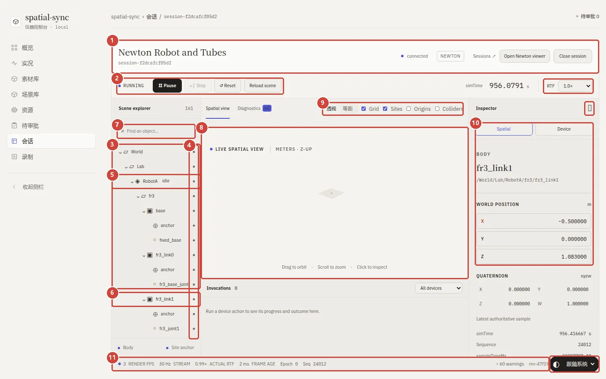</button></figure><figure class="shot after"><figcaption><i></i>改进 · 原型 design/ui-polish-proposal</figcaption><button type="button" class="zoom" data-src="img/01-workbench-after.webp" data-alt="会话工作台 改后截图（原型，绿框为对应改进）" aria-label="放大查看：会话工作台 改后截图（原型，绿框为对应改进）">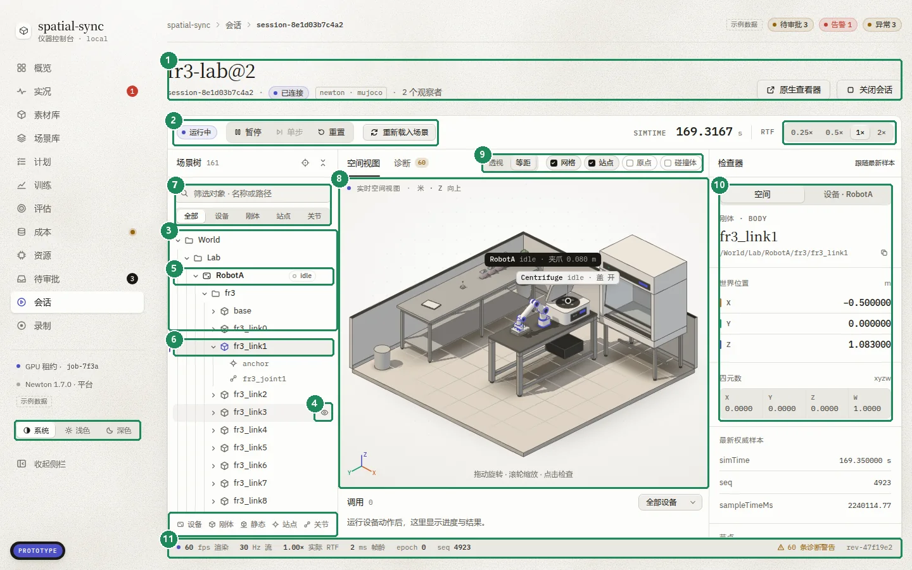</button></figure></div>
<details class="dark"><summary>同一页的暗色版本</summary><div class="pair"><figure class="shot before"><figcaption><i></i>现状 · 生产</figcaption><button type="button" class="zoom" data-src="img/wb-before-dark.webp" data-alt="生产端工作台，暗色" aria-label="放大查看：生产端工作台，暗色">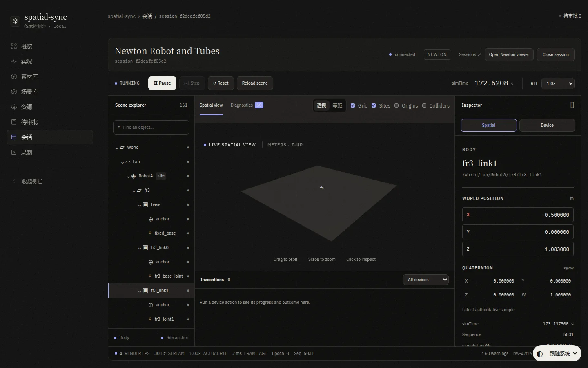</button></figure><figure class="shot after"><figcaption><i></i>改进 · 原型</figcaption><button type="button" class="zoom" data-src="img/wb-after-dark.webp" data-alt="改后原型工作台，暗色" aria-label="放大查看：改后原型工作台，暗色">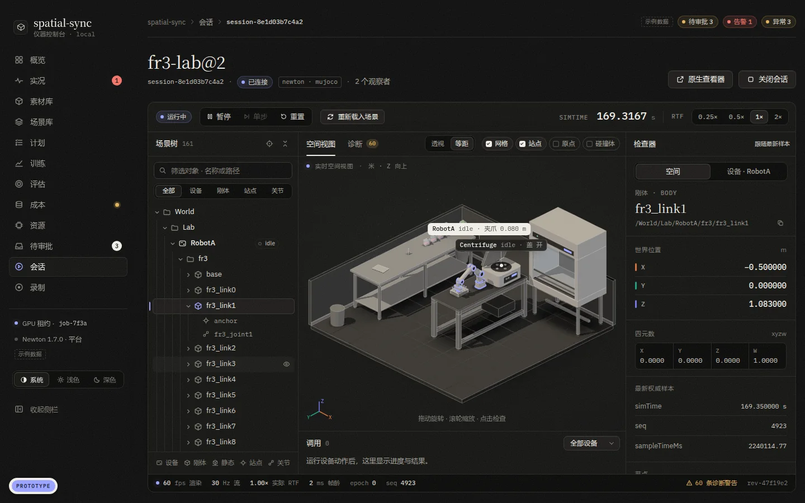</button></figure></div></details>
<ol class="notes"><li class="note"><div class="nh"><span class="num">1</span><b>页头</b></div>
<p class="pr"><span class="lb bad">问题</span><span>工作台自带一个卡片式页头，按钮是英文（Sessions ↗ / Open Newton viewer / Close session），和其他页面的页头不是一套。</span></p><p class="pr"><span class="lb ok">改进</span><span>使用统一页头：衬线标题、会话 ID、连接状态芯片、物理源标签、观察者数；操作按钮改为中文并配线性图标。</span></p></li>
<li class="note"><div class="nh"><span class="num">2</span><b>控制条</b></div>
<p class="pr"><span class="lb bad">问题</span><span>&quot;Pause&quot; 用墨色实底，比&quot;关闭会话&quot;还显眼；Step / Reset / Reload 各自带描边；RTF 是原生下拉框。</span></p><p class="pr"><span class="lb ok">改进</span><span>运行状态芯片 + 一组分段按钮（暂停 / 单步 / 重置），&quot;重新载入场景&quot;降为次级按钮；simTime 用等宽大字；RTF 改为分段控件。</span></p></li>
<li class="note"><div class="nh"><span class="num">3</span><b>场景树密度</b></div>
<p class="pr"><span class="lb bad">问题</span><span>标签只有 10.5px，却占 35px 行高；缩进只靠留白，层级一深就对不齐；默认全部展开，161 行里约三分之一是每个刚体重复的 anchor 和关节。</span></p><p class="pr"><span class="lb ok">改进</span><span>主行 13px / 28px，站点与关节为 11.5px 等宽次级行；14px 缩进参考线；默认只展开到刚体层和选中路径；折叠的组显示子项数。</span></p></li>
<li class="note"><div class="nh"><span class="num">4</span><b>图标与可见性</b></div>
<p class="pr"><span class="lb bad">问题</span><span>每行尾部都有一个 ● 可见性按钮，排成一整列噪点；图标是 Unicode 几何符号（方框、菱形、准星等），风格和侧栏 SVG 不一致，还依赖系统字体（本机检查器右上角的准星显示为方块）；关节图标用琥珀色，误用了警告语义色。</span></p><p class="pr"><span class="lb ok">改进</span><span>统一为 16px SVG 线性图标（设备 / 组 / 刚体 / 静态 / 站点 / 关节），全部用中性色；眼睛按钮悬停才出现，被隐藏的行常显 eye-off 并变灰；底部图例改为图标对照。</span></p></li>
<li class="note"><div class="nh"><span class="num">5</span><b>设备节点</b></div>
<p class="pr"><span class="lb bad">问题</span><span>RobotA 是可以操作的设备，但在树里只是&quot;组&quot;图标后面多一个 idle 小字。</span></p><p class="pr"><span class="lb ok">改进</span><span>设备行加粗，配专用图标和状态芯片（idle 为空心点，running 为靛蓝脉冲）；与检查器&quot;设备&quot;页签、视口浮标联动。</span></p></li>
<li class="note"><div class="nh"><span class="num">6</span><b>选中态</b></div>
<p class="pr"><span class="lb bad">问题</span><span>选中只有 2px 左线加浅底，和悬停态几乎一样。</span></p><p class="pr"><span class="lb ok">改进</span><span>浅底 + 细描边 + 靛蓝左标，图标变为强调色；祖先路径文字加深，能看出所在层级。</span></p></li>
<li class="note"><div class="nh"><span class="num">7</span><b>搜索与筛选</b></div>
<p class="pr"><span class="lb bad">问题</span><span>只有一个搜索框，占位符是英文 &quot;Find an object…&quot;。</span></p><p class="pr"><span class="lb ok">改进</span><span>中文占位&quot;筛选对象 · 名称或路径&quot;；新增按类型筛选（全部 / 设备 / 刚体 / 站点 / 关节）；结果平铺显示，高亮匹配并附父级名。</span></p></li>
<li class="note"><div class="nh"><span class="num">8</span><b>视口</b></div>
<p class="pr"><span class="lb bad">问题</span><span>视口只有 636×337，上方还有一条空带；会话跑久之后（simTime 169 s → 956 s）整个场景缩成视口中间一小块，画面几乎全空（原因未查）。</span></p><p class="pr"><span class="lb ok">改进</span><span>视口填满中列；选中只做高亮；树和视口双向联动（点视口里的机械臂即选中 RobotA）；角落显示坐标轴。取景缩小的问题单独排查。</span></p></li>
<li class="note"><div class="nh"><span class="num">9</span><b>视口工具条</b></div>
<p class="pr"><span class="lb bad">问题</span><span>原生复选框，字号 14px 比周围大，和&quot;透视 / 等距&quot;高度不齐。</span></p><p class="pr"><span class="lb ok">改进</span><span>图层开关改为 24px 胶囊切换，和&quot;读数&quot;开关同一族。</span></p></li>
<li class="note"><div class="nh"><span class="num">10</span><b>检查器</b></div>
<p class="pr"><span class="lb bad">问题</span><span>只读坐标画成输入框，看起来像可以编辑；Spatial / Device 是两个按钮，选中态像焦点框；文字全是英文。</span></p><p class="pr"><span class="lb ok">改进</span><span>键值行 + 轴色标（X 陶土 / Y 青 / Z 靛蓝，取自图表系列色）；页签改为分段控件并显示所属设备；路径可一键复制。</span></p></li>
<li class="note"><div class="nh"><span class="num">11</span><b>状态栏与主题</b></div>
<p class="pr"><span class="lb bad">问题</span><span>主题下拉框浮在右下角，压住状态栏的警告数和 revision。它本来在侧栏底部，是 overview.css 第 17–25 行把它改成了悬浮胶囊。</span></p><p class="pr"><span class="lb ok">改进</span><span>删掉那段覆盖样式，主题切换回到侧栏底部（规格 §2.4），做成系统 / 浅色 / 深色分段控件；状态栏中文化，&quot;60 条诊断警告&quot;可点进诊断页签。</span></p></li></ol>
</section>
<section class="sec" id="light" aria-labelledby="h-light">
<header class="sh"><span class="eb">02 · 浅色主题</span><h2 id="h-light">浅色主题<span class="h2s">为什么暗色优雅、浅色平淡</span></h2><p class="lede">同一页（概览）浅色对比。根因主要在 3D 视口：暗色下舞台&quot;抬起&quot;，浅色下变成灰平板。改后原型同时微调了浅色令牌。</p></header>
<div class="pair"><figure class="shot before"><figcaption><i></i>现状 · 生产 main @ 5c29ca3</figcaption><button type="button" class="zoom" data-src="img/02-light-theme-before.webp" data-alt="浅色主题 现状截图（生产，红框为问题）" aria-label="放大查看：浅色主题 现状截图（生产，红框为问题）">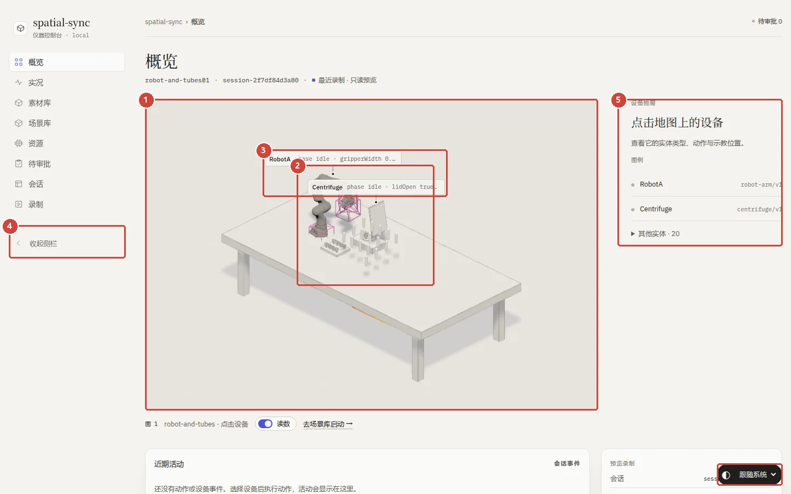</button></figure><figure class="shot after"><figcaption><i></i>改进 · 原型 design/ui-polish-proposal</figcaption><button type="button" class="zoom" data-src="img/02-light-theme-after.webp" data-alt="浅色主题 改后截图（原型，绿框为对应改进）" aria-label="放大查看：浅色主题 改后截图（原型，绿框为对应改进）">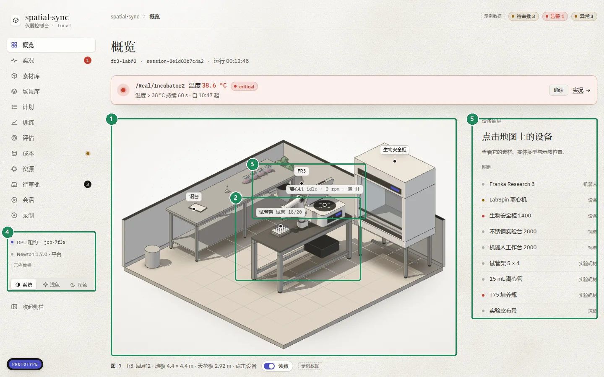</button></figure></div>

<ol class="notes"><li class="note"><div class="nh"><span class="num">1</span><b>视口舞台</b></div>
<p class="pr"><span class="lb bad">问题</span><span>浅色下整个视口是一块灰平板（实测 #e7e4de）。Newton 的无限地面平面用 --m-floor 以 --m-ao 的透明度铺满画布，白色模型陷在灰底里。暗色下同一机制恰好形成&quot;抬起的舞台&quot;（#2e2d2a 对 #121211），所以暗色好看，浅色发平。</span></p><p class="pr"><span class="lb ok">改进</span><span>舞台改为白到暖灰的径向渐变加点阵，地面有边界、网格向外淡出。生产端实现：地面平面只接收阴影（ShadowMaterial），画布透明，让 CSS 舞台渐变透出来。</span></p></li>
<li class="note"><div class="nh"><span class="num">2</span><b>模型轮廓</b></div>
<p class="pr"><span class="lb bad">问题</span><span>白色机体加浅色折边（#6e6b63，透明度 0.62），在浅底上轮廓发虚、没有体积。</span></p><p class="pr"><span class="lb ok">改进</span><span>浅色折边 #4f4c45、透明度 0.74；主光 0.70 / 环境 0.54 / 接触阴影 0.50，轮廓清楚，体积感更强。</span></p></li>
<li class="note"><div class="nh"><span class="num">3</span><b>读数浮标</b></div>
<p class="pr"><span class="lb bad">问题</span><span>两条浮标挤在一起，读数被截断（&quot;gripperWidth 0.…&quot;），和灰底几乎同色。</span></p><p class="pr"><span class="lb ok">改进</span><span>白底细描边浮标，自动错开避免重叠；选中时变为墨色实底。</span></p></li>
<li class="note"><div class="nh"><span class="num">4</span><b>侧栏底部</b></div>
<p class="pr"><span class="lb bad">问题</span><span>缺少规格 §2.2 的 GPU 租约和 Newton 版本；主题切换浮在内容之上。</span></p><p class="pr"><span class="lb ok">改进</span><span>侧栏底部显示平台状态，下面是主题切换。</span></p></li>
<li class="note"><div class="nh"><span class="num">5</span><b>设备抽屉</b></div>
<p class="pr"><span class="lb bad">问题</span><span>图例只列 2 个设备，其余实体收在原生三角展开项&quot;其他实体 · 20&quot;里。</span></p><p class="pr"><span class="lb ok">改进</span><span>图例直接列出可见实体，类型右对齐，有告警的实体带红点。</span></p></li>
<li class="note"><div class="nh"><span class="num">6</span><b>浅色令牌（全局）</b></div>
<p class="pr"><span class="lb bad">问题</span><span>底色 #f4f3ef 和面板 #fbfbf9 都是米色，阴影弱；行悬停 3.5% 几乎看不见；颗粒 0.22 让白面板发脏；强调色 #4a50d4 偏艳。</span></p><p class="pr"><span class="lb ok">改进</span><span>面板 #fdfdfb 加双层阴影；悬停 5%；强调色 #4c50c4；舞台 #ffffff → #e9e7e0；全页黑色颗粒改为只铺在底面的纸面纹理（见第 05 节）。暗色令牌不变。</span></p></li></ol>
</section>
<section class="sec" id="scenes" aria-labelledby="h-scenes">
<header class="sh"><span class="eb">03 · 实现偏离原型</span><h2 id="h-scenes">场景库<span class="h2s">实现与原型的偏差</span></h2><p class="lede">这一页原型已有设计，生产端在页头、卡片和控件上走了另一套。改进 = 回到原型的组件。</p></header>
<div class="pair"><figure class="shot before"><figcaption><i></i>现状 · 生产 main @ 5c29ca3</figcaption><button type="button" class="zoom" data-src="img/03-scene-library-before.webp" data-alt="场景库 现状截图（生产，红框为问题）" aria-label="放大查看：场景库 现状截图（生产，红框为问题）">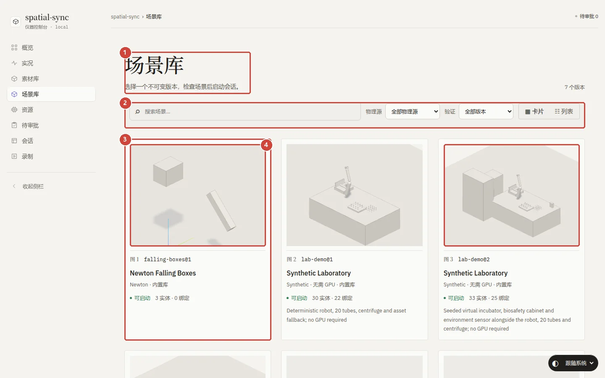</button></figure><figure class="shot after"><figcaption><i></i>改进 · 原型 design/ui-polish-proposal</figcaption><button type="button" class="zoom" data-src="img/03-scene-library-after.webp" data-alt="场景库 改后截图（原型，绿框为对应改进）" aria-label="放大查看：场景库 改后截图（原型，绿框为对应改进）">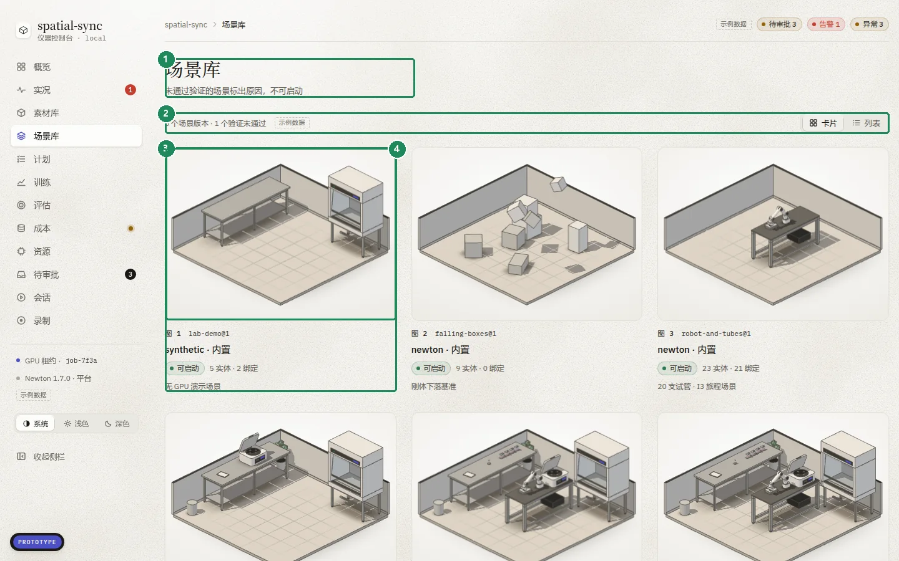</button></figure></div>

<ol class="notes"><li class="note"><div class="nh"><span class="num">1</span><b>页头与边距</b></div>
<p class="pr"><span class="lb bad">问题</span><span>标题 48px，整页向右多缩进 32px，和其他页面（30px，与面包屑左对齐）不一致；场景详情页同样如此。</span></p><p class="pr"><span class="lb ok">改进</span><span>所有页面共用同一页头和内容边距。</span></p></li>
<li class="note"><div class="nh"><span class="num">2</span><b>工具条</b></div>
<p class="pr"><span class="lb bad">问题</span><span>原生 select（系统样式，38px 高）和 44px 搜索框，和其他页 30px 的控件体系不一致。</span></p><p class="pr"><span class="lb ok">改进</span><span>使用原型的下拉（.sel）和分段控件（.seg），统一 30px 高。</span></p></li>
<li class="note"><div class="nh"><span class="num">3</span><b>卡片</b></div>
<p class="pr"><span class="lb bad">问题</span><span>场景卡是带边框的白盒，里面嵌灰图再加分隔线，和素材库的无框图卡不是同一套。</span></p><p class="pr"><span class="lb ok">改进</span><span>两个库共用一种图卡：圆角图、图号、标题、状态行，无外框，悬停时才浮起。</span></p></li>
<li class="note"><div class="nh"><span class="num">4</span><b>缩略图</b></div>
<p class="pr"><span class="lb bad">问题</span><span>浅色缩略图是白模型压在灰底上，层次弱；第三张还停在&quot;生成预览…&quot;。</span></p><p class="pr"><span class="lb ok">改进</span><span>缩略图沿用视口舞台的渐变和折边令牌；生成中显示骨架而不是文字。</span></p></li></ol>
</section>
<section class="sec" id="lists" aria-labelledby="h-lists">
<header class="sh"><span class="eb">04 · 实现偏离原型</span><h2 id="h-lists">列表页<span class="h2s">语言与密度（录制 / 会话 / 资源）</span></h2><p class="lede">录制、会话、资源三页沿用迁移前的英文眉标和标题，与中文导航混排；列表行高偏大。</p></header>
<div class="pair"><figure class="shot before"><figcaption><i></i>现状 · 生产 main @ 5c29ca3</figcaption><button type="button" class="zoom" data-src="img/04-recordings-before.webp" data-alt="列表页 现状截图（生产，红框为问题）" aria-label="放大查看：列表页 现状截图（生产，红框为问题）">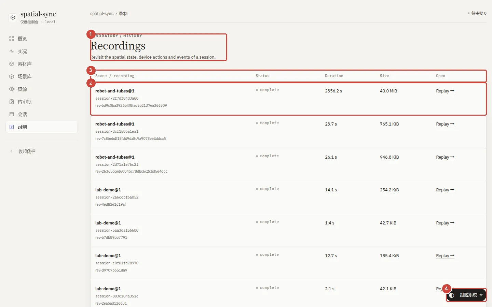</button></figure><figure class="shot after"><figcaption><i></i>改进 · 原型 design/ui-polish-proposal</figcaption><button type="button" class="zoom" data-src="img/04-recordings-after.webp" data-alt="列表页 改后截图（原型，绿框为对应改进）" aria-label="放大查看：列表页 改后截图（原型，绿框为对应改进）">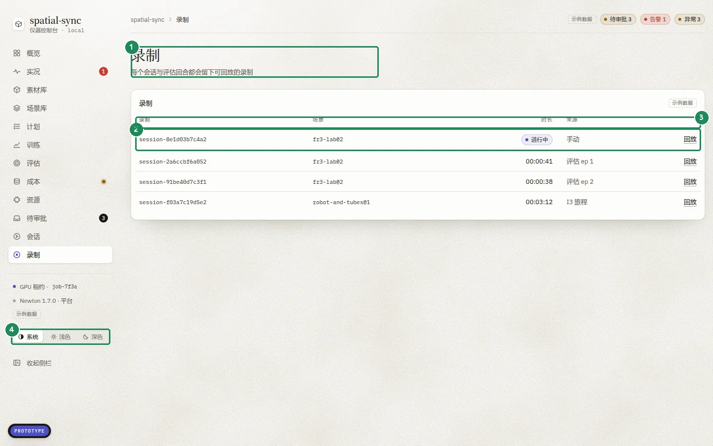</button></figure></div>

<ol class="notes"><li class="note"><div class="nh"><span class="num">1</span><b>页头语言</b></div>
<p class="pr"><span class="lb bad">问题</span><span>英文眉标&quot;LABORATORY / HISTORY&quot;加英文标题&quot;Recordings&quot;；会话页的&quot;Managed sessions&quot;&quot;Total sessions&quot;、资源页的&quot;Gateway machine&quot;同样如此。</span></p><p class="pr"><span class="lb ok">改进</span><span>中文标题与副标题，眉标只用于分节；三页统一。</span></p></li>
<li class="note"><div class="nh"><span class="num">2</span><b>行密度</b></div>
<p class="pr"><span class="lb bad">问题</span><span>每条录制占 97px、三行（场景、会话、revision 哈希），一屏只放下 7 条；状态是英文小字 complete。</span></p><p class="pr"><span class="lb ok">改进</span><span>单行 45px：会话 ID、场景、时长（进行中用芯片）、来源、回放；revision 收进详情或悬停提示。</span></p></li>
<li class="note"><div class="nh"><span class="num">3</span><b>表头</b></div>
<p class="pr"><span class="lb bad">问题</span><span>英文表头（Scene / recording、Status、Duration…）。</span></p><p class="pr"><span class="lb ok">改进</span><span>中文表头，数值列右对齐。</span></p></li>
<li class="note"><div class="nh"><span class="num">4</span><b>浮动主题控件</b></div>
<p class="pr"><span class="lb bad">问题</span><span>右下角主题控件盖住最后一行的&quot;Replay&quot;链接。</span></p><p class="pr"><span class="lb ok">改进</span><span>移入侧栏底部。</span></p></li></ol>
</section>

  <section class="sec" id="texture" aria-labelledby="h-texture">
    <header class="sh"><span class="eb">05 · 浅色质感</span><h2 id="h-texture">浅色怎么做出暗色那种质感<span class="h2s">做成纸，但只铺在底面</span></h2>
    <p class="lede">原型设计说明里的方向是"暗色是石材，浅色是暖纸"。暗色的质感来自三处：一层胶片颗粒盖住全页；暗底上的亮点人眼很敏感，所以 0.16 的颗粒就看得出；面板顶边 1px 高光像机加工的边。浅色照搬"一层黑色噪点"行不通：同样的亮度差在亮底上几乎看不见，调大了又是一层均匀的灰，像落了灰。上一版我把它降到 0.12，方向不对，这一节取代那一条。</p></header>

    <ol class="why">
      <li><b>双极纸纹</b><p>暖棕色暗点加白色亮点两层，亮暗都有才像纸的纹理；只有暗点就是灰尘。暗点用暖棕不用黑，米色不会被压灰。</p></li>
      <li><b>极淡云斑</b><p>一层低频噪声，2–4% 的不均匀，像纸浆纤维疏密不一。</p></li>
      <li><b>顶光</b><p>左上一束很淡的白光，四周略暖略暗，固定不随滚动，像纸放在台灯下。</p></li>
      <li><b>纹理只在底面</b><p>面板、卡片和 3D 视口保持光滑，像光面卡纸放在纸上，层次由此而来。3D 图也不再被噪点弄脏。暗色维持现状。</p></li>
    </ol>

    <div class="tri">
      <figure class="shot"><figcaption><i class="g"></i>A · 现在：黑色颗粒盖全页（0.22）</figcaption><button type="button" class="zoom" data-src="img/tex-ov-A.webp" data-alt="A：黑色颗粒覆盖全页">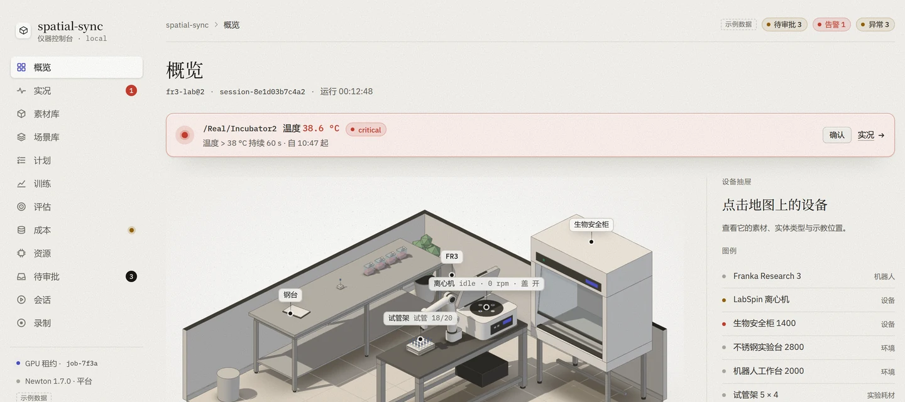</button></figure>
      <figure class="shot pick"><figcaption><i class="k"></i>B · 纸面（采用）：纸纹 + 云斑 + 顶光，只在底面</figcaption><button type="button" class="zoom" data-src="img/tex-ov-B.webp" data-alt="B：纸面纹理，只在底面">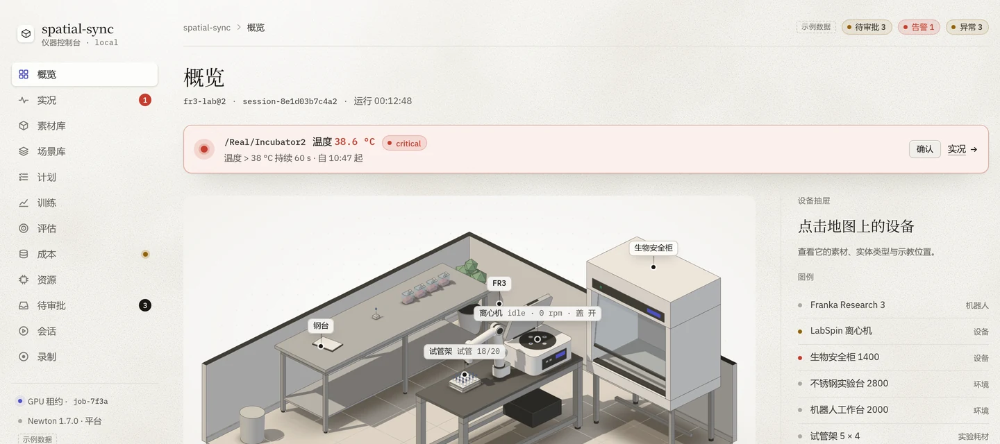</button></figure>
      <figure class="shot"><figcaption><i class="g"></i>C · 哑光：细密均匀颗粒 + 顶光</figcaption><button type="button" class="zoom" data-src="img/tex-ov-C.webp" data-alt="C：哑光细颗粒">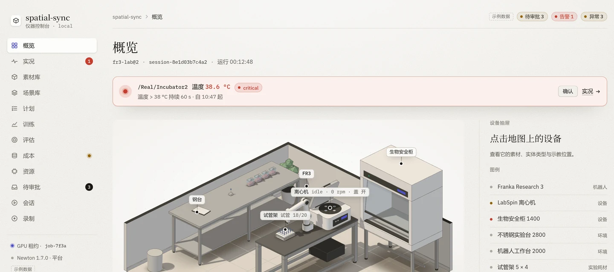</button></figure>
    </div>
    <p class="cap">上面是 1 倍尺寸的整体观感。下面是 2 倍细节，最右是暗色作参照。</p>
    <div class="quad">
      <figure class="shot"><figcaption><i class="g"></i>A · 现在</figcaption><button type="button" class="zoom" data-src="img/tex-detail-A.webp" data-alt="A 细节：黑色颗粒也盖在 3D 图上">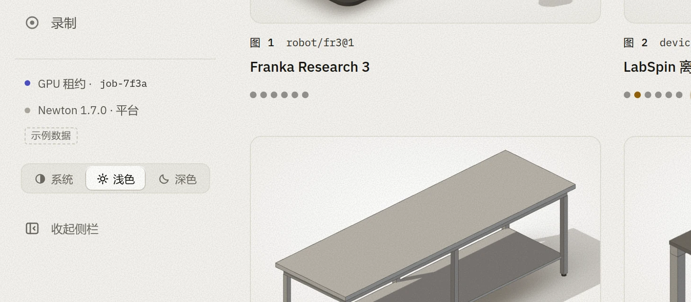</button></figure>
      <figure class="shot pick"><figcaption><i class="k"></i>B · 纸面（采用）</figcaption><button type="button" class="zoom" data-src="img/tex-detail-B.webp" data-alt="B 细节：纸纹在底面，图卡光滑">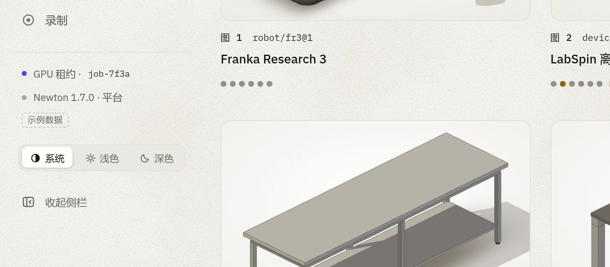</button></figure>
      <figure class="shot"><figcaption><i class="g"></i>C · 哑光</figcaption><button type="button" class="zoom" data-src="img/tex-detail-C.webp" data-alt="C 细节：细密均匀颗粒">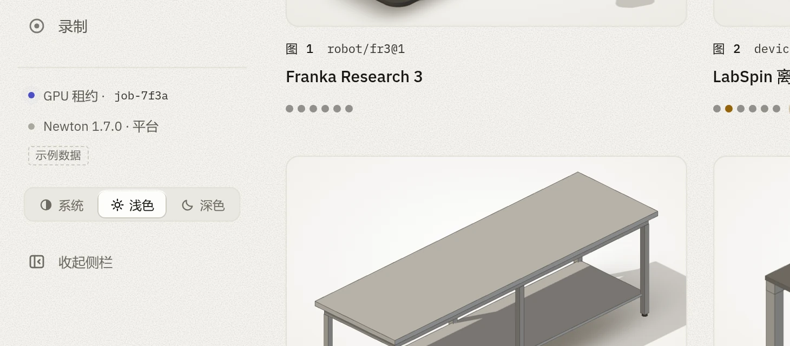</button></figure>
      <figure class="shot"><figcaption><i class="g"></i>暗色参照（不改）</figcaption><button type="button" class="zoom" data-src="img/tex-detail-D.webp" data-alt="暗色参照：胶片颗粒">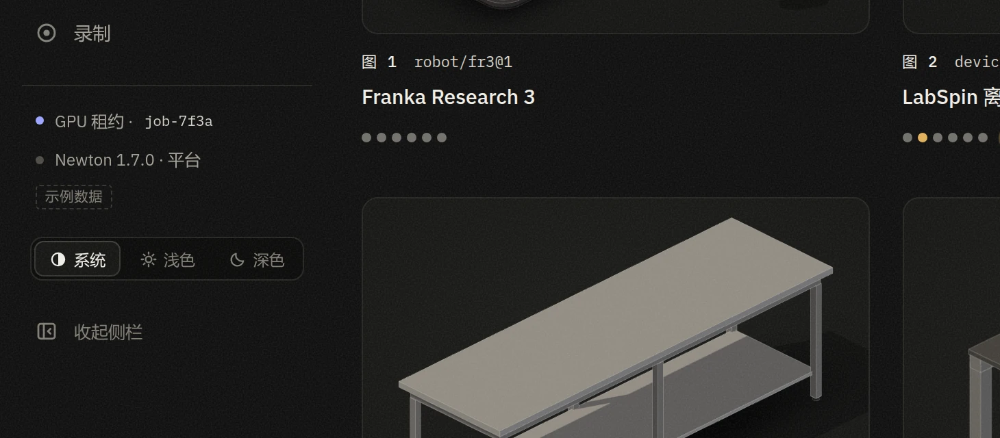</button></figure>
    </div>

    <div class="impl">
      <span class="eb">实现</span>
      <p>纯 CSS 加内联 SVG 噪声（feTurbulence），没有图片资源。浅色把 <code>--grain-o</code> 设为 0，<code>body</code> 背景铺五层 <code>--paper</code>：顶光、四周暖晕、暖棕纸纹、白色纸纹、云斑；暗色 <code>--paper: none</code>，胶片颗粒照旧。噪声按图块栅格化一次后平铺，开销很小。生产端改 <code>tokens.css</code> 同样几行即可。</p>
      <p>如果你更想要"石材"那种冷静、均匀的感觉，C 也成立，但少了纸的温度；它和 B 只差两个参数，换起来很快。</p>
    </div>
  </section>


  <section class="sec" id="tokens" aria-labelledby="h-tokens">
    <header class="sh"><span class="eb">06 · 浅色令牌</span><h2 id="h-tokens">浅色令牌前后对照</h2><p class="lede">只改浅色列；暗色全部保持原值。若采纳，需要同步 tokens.css 与规格 §1.1 的颜色表（这是规格里的值，改动请你确认）。本页的浅色就是用新值渲染的。</p></header>
    <div class="tw"><table><thead><tr><th>令牌</th><th>现值</th><th>建议</th><th>用途</th></tr></thead><tbody>
<tr><td><code>--ground</code></td><td class="mono">#f4f3ef</td><td class="mono new">#f3f2ee</td><td class="mt">页面底色</td></tr>
<tr><td><code>--surface</code></td><td class="mono">#fbfbf9</td><td class="mono new">#fdfdfb</td><td class="mt">面板</td></tr>
<tr><td><code>--line / --line-2</code></td><td class="mono">#e3e1da / #d0cdc4</td><td class="mono new">#e2dfd7 / #cdc9bf</td><td class="mt">细线 / 控件描边</td></tr>
<tr><td><code>--ink</code></td><td class="mono">#1b1a17</td><td class="mono new">#181713</td><td class="mt">主文字</td></tr>
<tr><td><code>--accent</code></td><td class="mono">#4a50d4</td><td class="mono new">#4c50c4</td><td class="mt">强调色（饱和度略降）</td></tr>
<tr><td><code>--row-hover</code></td><td class="mono">3.5%</td><td class="mono new">5%</td><td class="mt">行悬停</td></tr>
<tr><td><code>--shadow-1</code></td><td class="mono">单层长阴影</td><td class="mono new">0.5px 轮廓 + 近影 + 长影</td><td class="mt">面板浮起感</td></tr>
<tr><td><code>--stage-1 → --stage-2</code></td><td class="mono">#fdfdfb → #f0efea</td><td class="mono new">#ffffff → #e9e7e0</td><td class="mt">视口舞台渐变</td></tr>
<tr><td><code>--grain-o</code></td><td class="mono">0.22</td><td class="mono new">0</td><td class="mt">全页颗粒（浅色关闭，暗色仍为 0.16）</td></tr>
<tr><td><code>--paper / --paper-size / --paper-att</code></td><td class="mono">无</td><td class="mono new">顶光 + 四周暖晕 + 暖棕纸纹 + 白色纸纹 + 云斑</td><td class="mt">只铺在底面的纸面纹理（新增）</td></tr>
<tr><td><code>--m-edge / --m-edge-o</code></td><td class="mono">#6e6b63 / 0.62</td><td class="mono new">#4f4c45 / 0.74</td><td class="mt">3D 折边</td></tr>
<tr><td><code>--m-key / --m-hemi / --m-ao</code></td><td class="mono">0.64 / 0.58 / 0.42</td><td class="mono new">0.70 / 0.54 / 0.50</td><td class="mt">主光 / 环境光 / 接触阴影</td></tr>
<tr><td><code>--m-floor</code></td><td class="mono">#dedbd3</td><td class="mono new">#e2ded4</td><td class="mt">地面</td></tr>
    </tbody></table></div>
  </section>

  <section class="sec" id="actions" aria-labelledby="h-actions">
    <header class="sh"><span class="eb">07 · 落地建议</span><h2 id="h-actions">按优先级落到生产代码</h2><p class="lede">P0 直接对应你提到的两个问题；P1 是照原型补齐；P2 是体验细节。场景树的"按类型筛选"是新增功能，超出规格 §6"结构不变"的范围，可以先不做。</p></header>
    <ol class="acts">
<li class="act"><span class="pri p0">P0</span><div class="ab"><b>会话工作台迁入新框架样式</b><p>规格 §5.11 / §6 要求"样式改为新令牌，结构与 data-testid 不变"，目前仍是旧版 styles.css。按原型新页面改 SceneTree / Inspector / Workbench 的样式与图标，保留全部 data-testid。</p><div class="files"><code>apps/web/src/components/SceneTree.tsx</code><code>apps/web/src/components/Inspector.tsx</code><code>apps/web/src/components/Workbench.tsx</code><code>apps/web/src/styles.css</code></div></div></li>
<li class="act"><span class="pri p0">P0</span><div class="ab"><b>浅色视口去掉&quot;灰平板&quot;</b><p>地面平面改为只接收阴影（ShadowMaterial），Canvas 开启 alpha 并去掉 &lt;color attach="background"&gt;，让 .overview-stage 的 CSS 渐变透出；缩略图同理。</p><div class="files"><code>apps/web/src/components/viewer/SceneViewport.tsx</code><code>apps/web/src/overview.css</code></div></div></li>
<li class="act"><span class="pri p1">P1</span><div class="ab"><b>主题切换与侧栏底部</b><p>删掉 overview.css 第 17–25 行的悬浮胶囊覆盖，主题切换回到侧栏底部并做成分段控件（规格 §2.4）；补上 GPU 租约与 Newton 版本（规格 §2.2）。</p><div class="files"><code>apps/web/src/overview.css</code><code>apps/web/src/components/PlatformShell.tsx</code><code>apps/web/src/shell.css</code></div></div></li>
<li class="act"><span class="pri p1">P1</span><div class="ab"><b>页头、卡片和控件统一</b><p>场景库与场景详情改用统一页头和边距；场景卡与素材卡共用图卡；原生 select 与复选框换成原型的 .sel / 胶囊开关。</p><div class="files"><code>apps/web/src/scenes.css</code><code>apps/web/src/assets.css</code></div></div></li>
<li class="act"><span class="pri p1">P1</span><div class="ab"><b>浅色令牌与纸面纹理</b><p>如果认可第 05、06 节的方案，同步改 tokens.css（浅色关掉 body::after 颗粒，body 背景铺 --paper）和规格 §1.1、§1.3 的浅色部分。暗色不变。</p><div class="files"><code>apps/web/src/tokens.css</code><code>docs/spec/LAB_WEB_UI_SPEC_V1.md §1.1</code></div></div></li>
<li class="act"><span class="pri p2">P2</span><div class="ab"><b>列表页中文化与行密度</b><p>录制、会话、资源三页去掉英文眉标和标题；录制表改为单行。</p><div class="files"><code>apps/web/src/routes/recordings.tsx</code><code>apps/web/src/routes/sessions.index.tsx</code><code>apps/web/src/routes/resources.gpu.tsx</code></div></div></li>
<li class="act"><span class="pri p2">P2</span><div class="ab"><b>排查视口取景缩小</b><p>会话跑到 simTime 956 s 时，工作台视口里整个场景缩成中间一小块（169 s 时正常）。原因未查，可能是有物体漂远、撑大了取景包围盒，未验证。</p><div class="files"><code>apps/web/src/components/viewer/SceneViewport.tsx（frameBounds）</code><code>apps/web/src/components/viewer/CameraRig.tsx</code></div></div></li>
    </ol>
  </section>

  <footer class="fine">
    <p>截图环境：headless Chromium，1440×900，系统字体补了 Noto Sans/Serif SC 与微软雅黑。生产端为本地 API + Vite dev，Newton <code>robot-and-tubes@2</code> 实时会话（CPU）；原型以本地文件打开。</p>
    <p>待确认：有活动会话时，概览页视口在无头浏览器里一直空白（工作台视口正常），所以概览对比用的是"最近录制 · 只读预览"状态的截图。检查器右上角的准星符号在本机显示为方块，Windows 上可能正常。</p>
  </footer>
</main>

<dialog class="lb" id="lightbox" aria-label="截图放大">
  <div class="bar"><span id="lb-cap"></span><button type="button" id="lb-close">关闭</button></div>
  
</dialog>

<script>
(function(){
  const dlg=document.getElementById('lightbox'),img=document.getElementById('lb-img'),cap=document.getElementById('lb-cap');
  document.addEventListener('click',e=>{
    const z=e.target.closest('.zoom');
    if(z&&dlg.showModal){img.src=z.dataset.src;img.alt=z.dataset.alt;cap.textContent=z.dataset.alt;dlg.showModal();return}
    if(e.target===dlg||e.target.id==='lb-close')dlg.close();
  });
  const b=document.getElementById('copy-path');
  b.addEventListener('click',()=>{
    const t=document.getElementById('path').textContent;
    const done=()=>{b.textContent='已复制';setTimeout(()=>{b.textContent='复制'},1600)};
    try{navigator.clipboard.writeText(t).then(done,()=>{const r=document.createRange();r.selectNodeContents(document.getElementById('path'));const s=getSelection();s.removeAllRanges();s.addRange(r)})}catch(err){}
  });
})();
</script>
